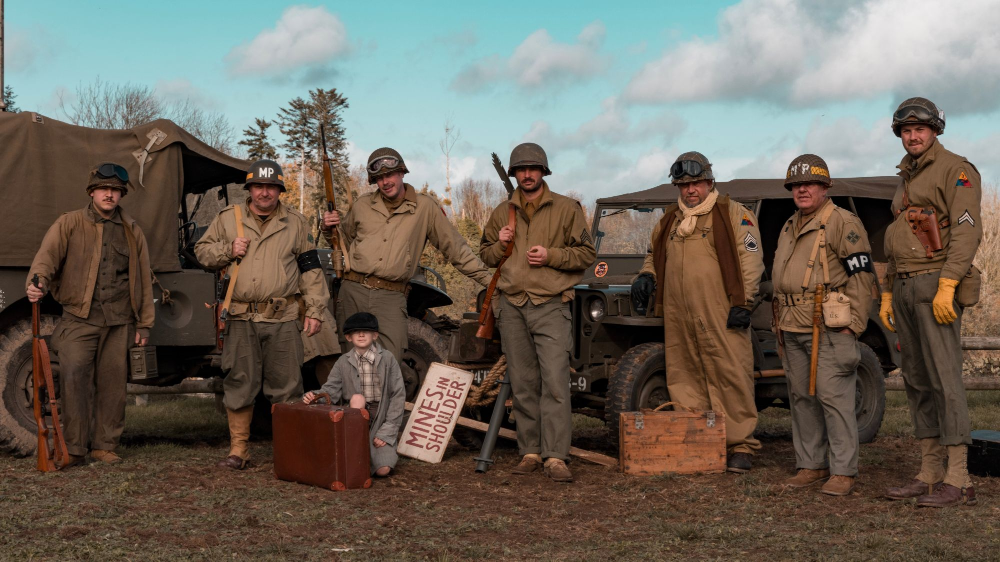

PRODUCTEUR · RÉALISATEUR
EMPREINTE
DE GUERRE.
Un court-métrage de fiction inspiré des événements du Cotentin, juin 1944.

L'HISTOIRE
UNE VALISE,
UNE PROMESSE.
Juin 1944. Louis voit ses parents arrêtés sous ses yeux. Sa mère n'a que quelques secondes pour lui parler : il doit rejoindre son oncle, sans oublier sa valise et son ourson.
Seul au milieu de l'exode, l'enfant traverse un pays qui s'effondre, sans savoir que sa valise pourrait sauver les siens.
- Réalisateur et producteur
- Jérémy Chouibkhi — JC Production
- Scénario
- Association Saint-Sauveur 44, réécrit par Jérémy Chouibkhi
- Avec la collaboration de
- L'association Saint-Sauveur 44
- Tournage
- 14 et 15 novembre 2026, Saint-Sauveur-le-Vicomte et Cotentin
- Image
- Caméra Blackmagic, objectifs anamorphiques Sirui
- Avant-première
- D-Day Experience, date à venir
TOURNAGE COMPLÉMENTAIRE EN 2027
REJOIGNEZ
L'AVENTURE
Nous recherchons des figurants bénévoles et des partenaires : aide financière ou en nature (carburant, repas, matériel). Mention au générique, remerciements, invitation à la projection et logo selon le soutien.